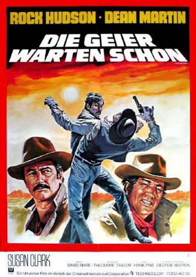

#11085 Die Geier warten schon
Alternativ: Showdown (Englischer Titel)
 
 IMDB-Wertung: 5.9 / 10
IMDB-Wertung: 5.9 / 10  Metascore: 0
Metascore: 0 
Chuck Jarvis, Sherriff eines beschaulichen Städtchens, bekommt es mit einem Zugüberfall zu tun. Ausgerechnet sein Jugendfreund Billy Massey wird als Täter identifiziert. Jarvis bleibt nichts anderes übrig, als sich auf die Spur seines Freundes zu machen. Und tatsächlich: Es gelingt ihm, Massey zu stellen - doch jetzt wird es für Jarvis erst richtig kompliziert ...
Jahr: 1973
Dauer: 98 Minuten
FSK: 12
Land: USA Studio: A Universal PictureTonspuren:
Untertitel: Deutsch,
Auflösung: 720p (1280x544) Größe: 3348 MB
Genre: Western
Regisseur: George Seaton
Drehbuch: Theodore Taylor, Hank Fine
Soundtrack: David Shire
Darsteller:
 Rock Hudson als Chuck Jarvis
Rock Hudson als Chuck Jarvis Dean Martin als Billy Massey
Dean Martin als Billy Massey- Susan Clark als Kate Jarvis
 Donald Moffat als Art Williams
Donald Moffat als Art Williams John McLiam als F.J. Wilson
John McLiam als F.J. Wilson- Ben Zeller als Perry Williams
 Ed Begley Jr. als Pook
Ed Begley Jr. als Pook- Rich Correll als Billy - Age 18 (uncredited)
- Cay Forester als Saleslady (uncredited)
- James Carroll Jordan als Chuck - Age 18 (uncredited)
- Michael Rupert als Bellboy (uncredited)
- Justin Tarr als Slade (uncredited)
- Charles Baca als Martinez
- Jackson D. Kane als Clem
- John Gill als Earl Cole
- Philip L. Mead als Jack Bonney
- Rita Rogers als Girl
- Victor Mohica als Big Eye
- Raleigh Gardenhire als Joe Williams
- Dan Boydston als Rawls
- Henry Allin als Policeman (uncredited)
- Richard Breeding als Prisoner (uncredited)
- Mickey Burleson als Young Man (uncredited)
- Bobbie Christian als Railroad Passenger (uncredited)
- Orlando F. Cordova als Spectator (uncredited)
- Tomas R. Cordova als Boarder (uncredited)
- Hal K. Dawson als Car Salesman (uncredited)
- Barbara De Kins als Train Passenger (uncredited)
- John T. Dilg als Baggageman (uncredited)
- Ray Garcia als Tracker #2 (uncredited)
- Raymond Greenway als Frank Phillips (uncredited)
- Clara Jones als Train Passenger (uncredited)
- Ronald A. Jones als Train Passenger (uncredited)
- Greg Konblett als Bully (uncredited)
- Jack Lloyd als Sheriff (uncredited)
- Larry E. Mann als Conductor (uncredited)
- Eleutrio Martinez als Boarder (uncredited)
- Paul Matthews als Station Master (uncredited)
- Dennis McDougall als Bully (uncredited)
- Erwin Neal als Train Passenger (uncredited)
- Kyle Reddick als Chuck - Age 12 (uncredited)
- Sonny Robbins als Collins (uncredited)
- Richard Romancito als Tracker #1 (uncredited)
- Antonio Romero als Bennie (uncredited)
- Mark Russell als Boarder (uncredited)
- Richard Steele als Bully (uncredited)
- Bob Suppelsa als Billy - Age 12 (uncredited)
- Ignacio Torrez Jr. als Railroad Passenger (uncredited)
- Kelly Upson als Bully (uncredited)
- Leo Vincenti als Indian Chief (uncredited)
Datei: X:\HD-Western-1960-1979\Geier warten schon, Die (1973, FSK12, 1280x544).mkv seit 24.04.2019
Festplatte: HD Eastern+Western
 Es gibt insgesamt 110 Filme in der Gruppe 'HD-Western-1960-1979'
Es gibt insgesamt 110 Filme in der Gruppe 'HD-Western-1960-1979'